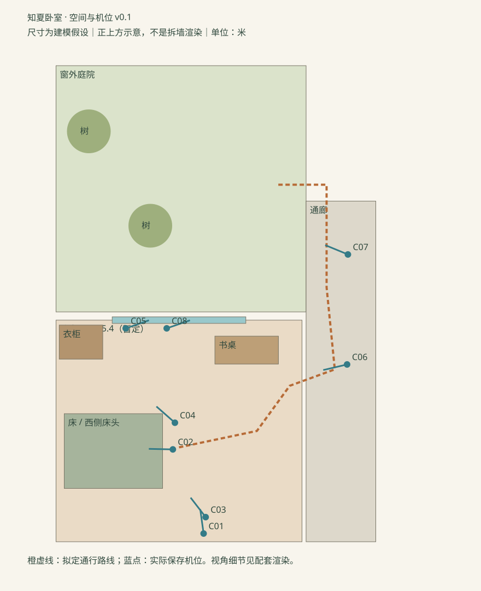

未来女孩林知夏 / 2026.10.22 / SPATIAL STUDY 01卧室、通廊入口与窗外庭院
沿用现行布局与木色、暖墙、绿色织物方向。八个机位来自同一套三维几何，没有按镜头拆墙或移动家具。
可编辑 Blender 工程 · 范围与检查记录 · 八机位总览
 C01 · 卧室全景
C01 · 卧室全景 C02 · 床侧关系
C02 · 床侧关系 C03 · 贴地拖鞋
C03 · 贴地拖鞋 C04 · 衣柜与窗侧
C04 · 衣柜与窗侧 C05 · 贴窗起点
C05 · 贴窗起点 C06 · 通廊回望
C06 · 通廊回望 C07 · 庭院借景
C07 · 庭院借景 C08 · 贴窗终点
C08 · 贴窗终点贴窗路径 · 几何预演
6.08秒，12fps，73帧。保存的摄影机沿窗平移1米，距玻璃0.23米；只验证当前空间与路径，不含波纹、水巷换景或正式动作节奏。
空间关系与机位

相机与尺寸检查 · 拟定通路离散射线检查